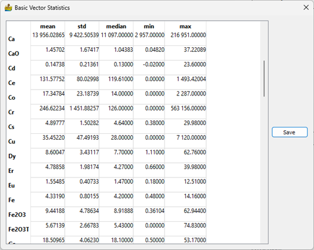
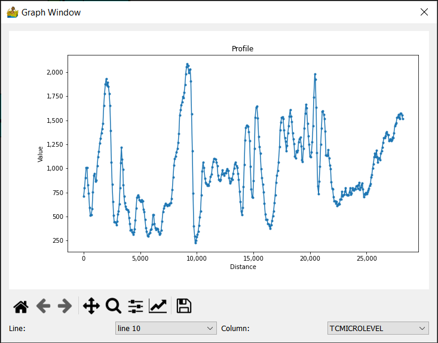
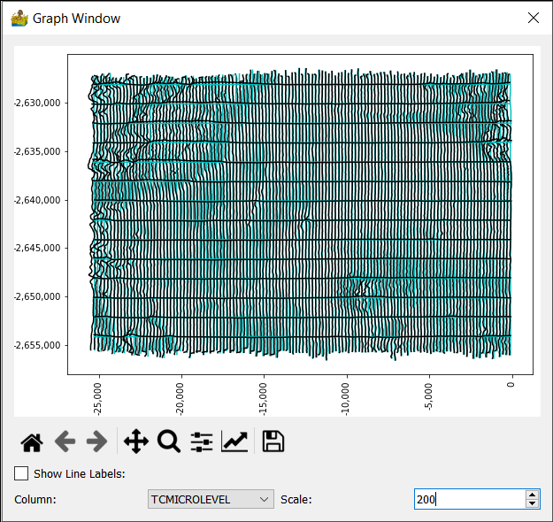
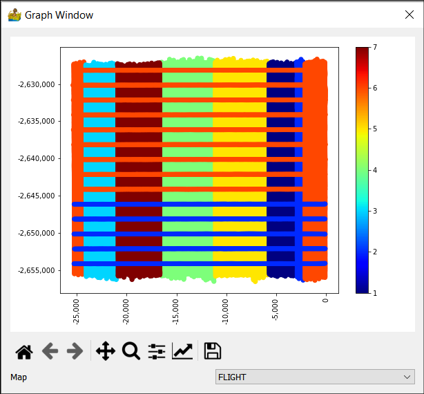
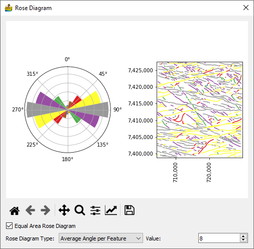

Vector Analysis: Context Menu¶
The vector context menus are available for modules which have vector output data. Output data is only available on green modules. To access the context menu, simply right-click a green module.
Display/Edit Vector Metadata¶
Here, the map projection associated with the vector file can be either defined or changed.
Basic Vector Statistics¶
Vector datasets contain metadata in the form of tables. Often, these tables contain numerical data, and it is desirable to know the statistics of such data. An example would be the statistics of geochemistry elements. This functionality has been added to PyGMI. Consistent with the raster version of this tool, statistics can be exported to a text file for use in other packages
Show Profile Data¶
This module displays line data or vector point data in profile form. The line and column can be chosen for display.
Show Profiles on a Map¶
This module displays line data in in map form. The line data is displayed in black, superimposed over the x,y location of the data (gray line). The scale parameter changes the anomaly scale.
Show Vector Data¶
This is a simple map showing points with their values in colours. Point data can also be displayed according to a number of present stretches. This allows for the quick interrogation of data to identify anomalies. The following display styles are available for point data:
Normal
Group using Standard Deviations above Mean (0)
Group by Quartile
Group by K-Means classes.
The user must specify the channel to be displayed. In addition, different colour bars can also be selected. All plots can be saved as graphical images for use in reports.
Show Histogram¶
A histogram graph has been added to allow for creating a histogram of a vector channel. The histogram can have a log scale applied to the y-axis and can be cumulative. As with all graphs in PyGMI, the user can export a graphical image of the histogram for use in reports.
Plot Correlation Coefficients¶
Correlation coefficients are popularly used to find relationships between different data types.
Two colour modes are available:
Normal - here negative and positive correlations are mapped to colours.
Positive correlation highlights - This highlights positive correlation values above 50%.
In both cases, only the lower triangular portion of the heatmap is shown, since the upper triangular portion is a symmetrical duplication. This simplifies the final plot.
Notice for a large number of channels, reading the values can be difficult. Two options are available for this; the user can either zoom into the plot or hover over a feature of interest to get the correlation between two channels (displayed in the bottom right corner of the plot).
Show Rose Diagrams¶
This module calculates and displays rose diagrams. It needs as input vector data with line features (as opposed to point or polygon) which has been imported into PyGMI. The user can specify how features are defined, either one angle per feature defined by the start and end point of the feature, or an angle per segment in the feature. The number of angles in the rose diagram can be set as well. A map of the features colour coded is also displayed. Equal area rose diagrams can also be produced.
Export XYZ Data¶
This module allows for the export of XYZ data to either csv of Excel format.
Export Vector Data¶
This module allows for the export of vector data to either shapefile, GeoJSON or GeoPackage format.